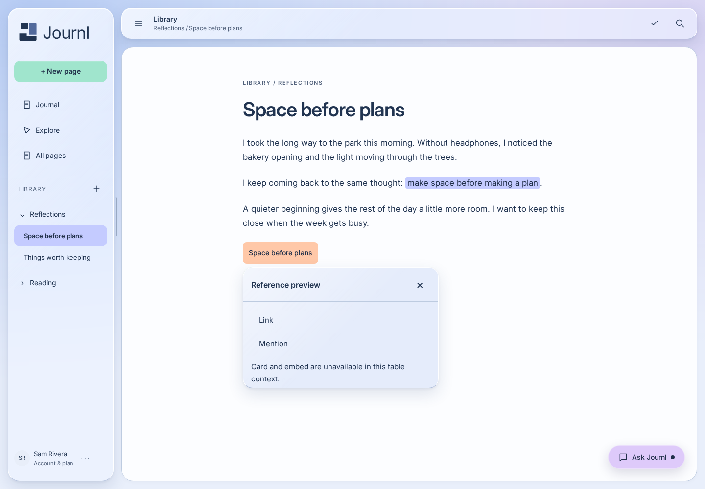
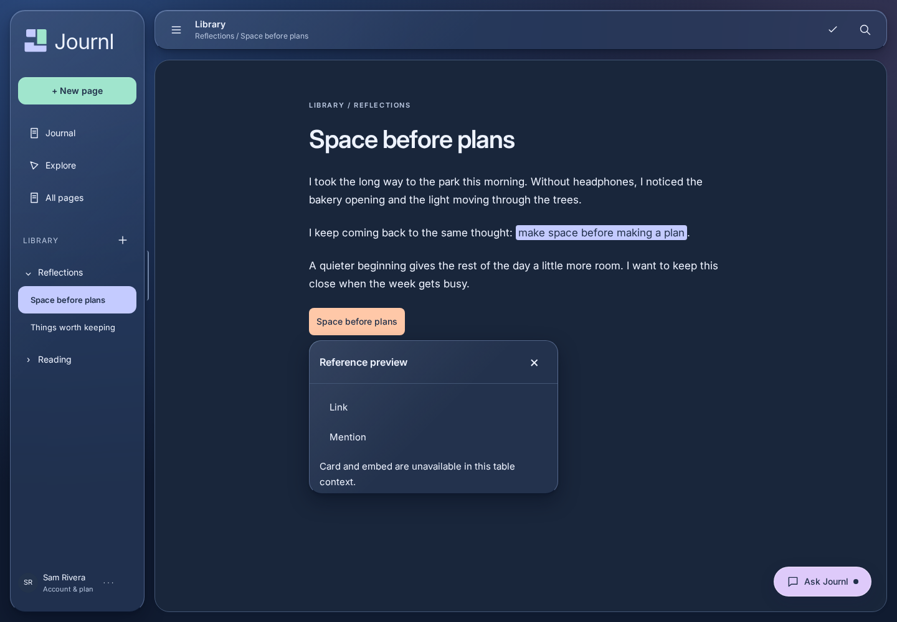
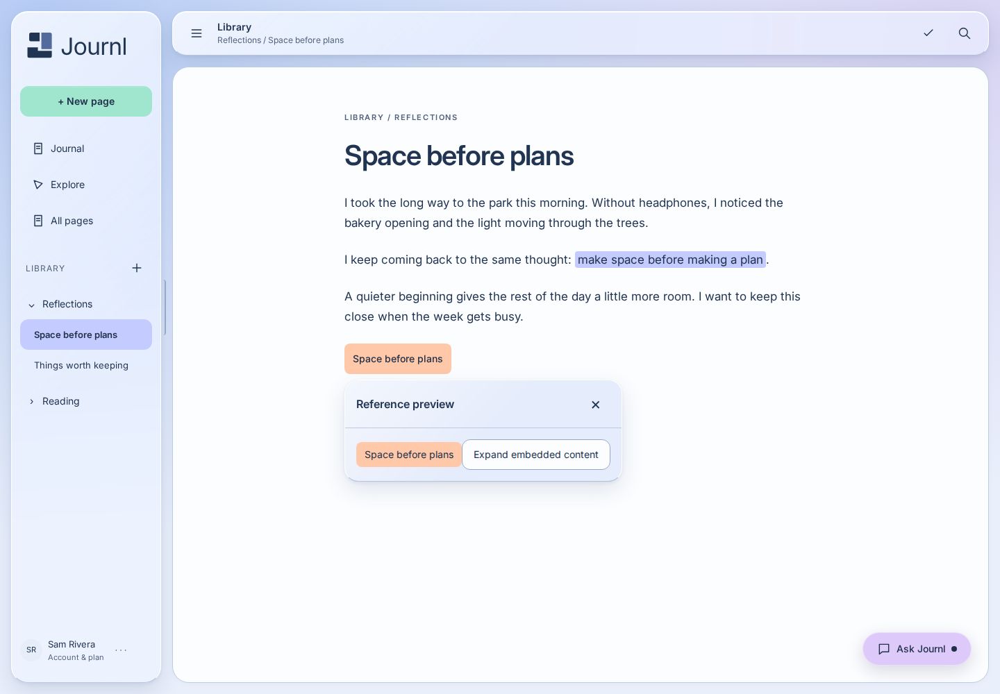
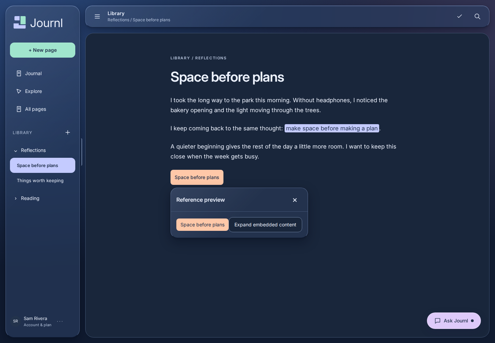
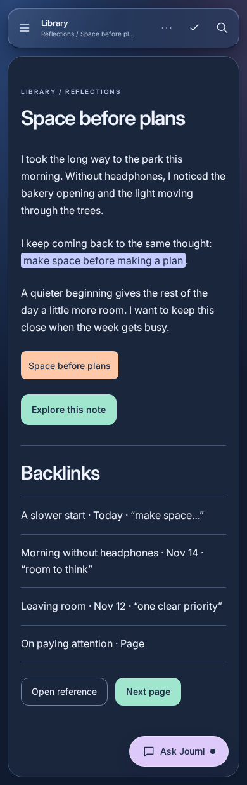
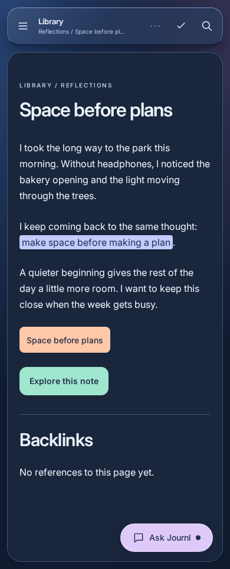
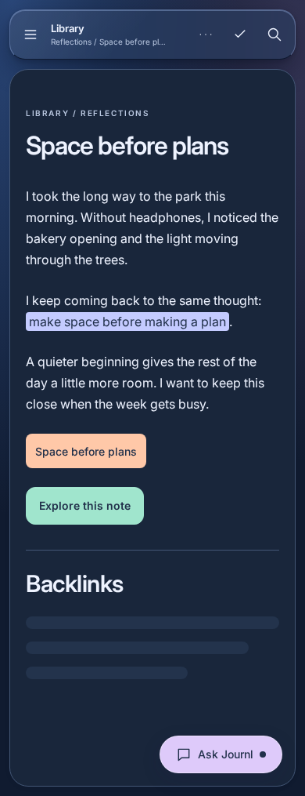
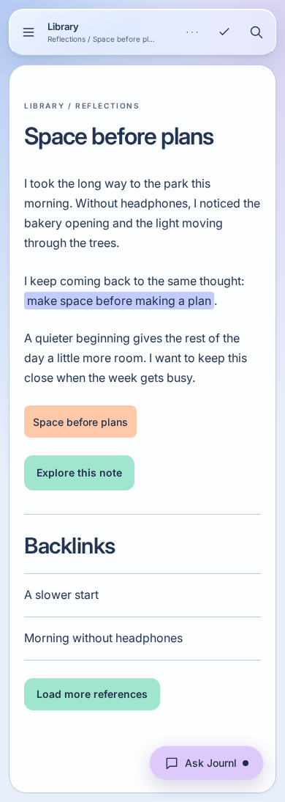
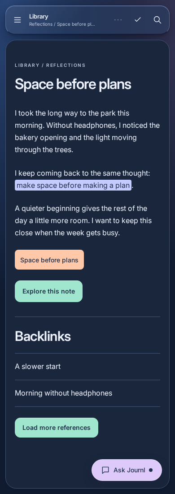
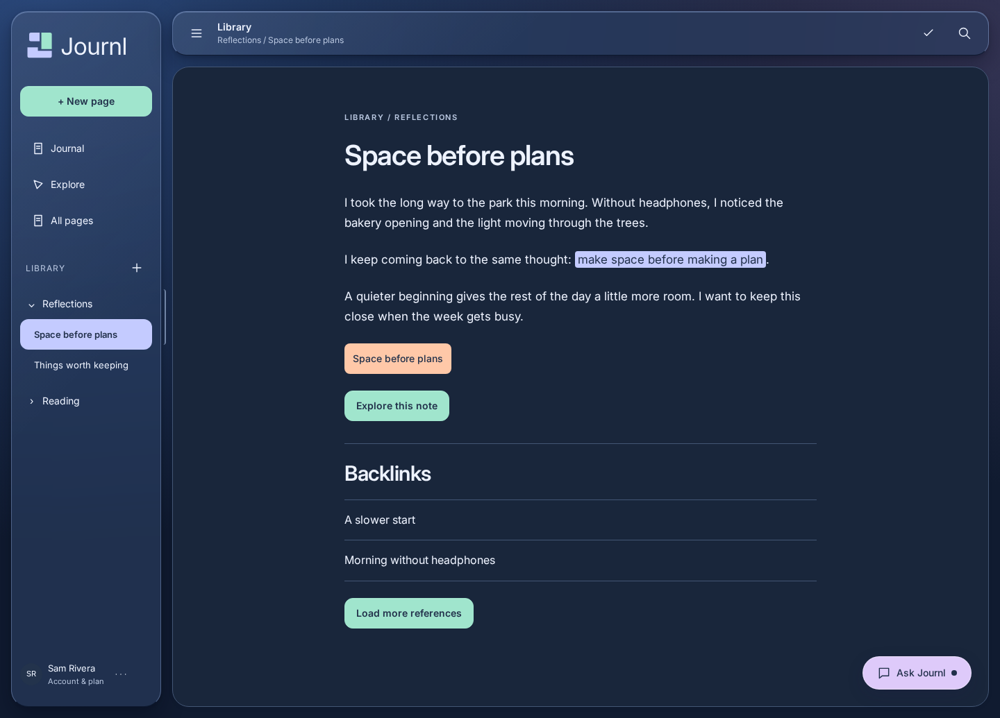

References
Approved application · approved logoEvery image below is an actual canonical PNG. Open an image for its full resolution. These are authored design scenes, not current-app browser captures.
Reference preview · table-restricted
preview-table-restrictedActions and implementation pointers
× · Link · Mention
apps/web/src/components/references/reference-backlinks.tsxpackages/better-editor/src/ui/reference-display.tsxpackages/better-editor/src/ui/reference-views.tsx

SHA256 4076097533a323e4be535b4c98e56c96251ee7c5778a2a05e5d91f6a2f9653f3


SHA256 0ea78ed79e2d53f09c262fb50b2982eefdd33f5ccdea921e4275405d5612825f


SHA256 cca803aa5adf436f3992d0d5ad6920dd7dfb940b1d76a5a270c3115a137a0ece

SHA256 2abdabfce1705bbe241ffe326931a6cefd64c41bb283e55200375b16f783d2e6

SHA256 252ce89a52e16a70e670aca00bad1e1527dada10fd2c3822fc08f4129abfbc12

SHA256 13f6580214dc1928924f68dda1d93ca835910a099b42ac934034f51716a718a8
Reference preview · collapsed
preview-collapsedActions and implementation pointers
× · Expand embedded content
apps/web/src/components/references/reference-backlinks.tsxpackages/better-editor/src/ui/reference-display.tsxpackages/better-editor/src/ui/reference-views.tsx


SHA256 cf430fc93157af5bf92f6c3bab29bb5a2b4c0e79df5f6462303a66619c257204


SHA256 004cbeced037f2d072f94560c67000430849b3d47982f958b3b9e29c48b4b6cd

SHA256 24223b7788664e5372254d8113ffd143e345cfaf8bf2306a90a18fddde6f1b51

SHA256 f211e920077c51b482e5f50833effa6672421b2dffd9ec612c7fd4f377340774
Backlinks · populated
backlinks-populatedActions and implementation pointers
+ New page · Journal · Explore · All pages · ⌄ · Reflections · › · Reading · Space before plans · Explore this note · Open reference · Next page · Ask Journl · Today’s Journal · Close · Instant · Thinking
apps/web/src/components/references/reference-backlinks.tsxpackages/better-editor/src/ui/reference-display.tsxpackages/better-editor/src/ui/reference-views.tsx

SHA256 b4e172fc38fa280d14aeaa3e9795a3afbedd316f8eeb501c4fb03497daa10e82


SHA256 d8782455987e56b926ae93d2123632009532ac0098f8d4306e6d96cb012b87f0

SHA256 12015331901676c79416dbb3d2bbe43ea8ccc256ca4597879bde5721a218cc9b

SHA256 cf5d84b5da35490482e64b4f7d8d4b751d9cddeff2f77d9f3a686df711f82f25
Backlinks · empty
backlinks-emptyActions and implementation pointers
+ New page · Journal · Explore · All pages · ⌄ · Reflections · › · Reading · Space before plans · Explore this note · Ask Journl · Today’s Journal · Close · Instant · Thinking
apps/web/src/components/references/reference-backlinks.tsxpackages/better-editor/src/ui/reference-display.tsxpackages/better-editor/src/ui/reference-views.tsx

SHA256 d9e5777086cf10bcd85416ee2f634d64ad7fa53e43914aef2992b8f43cd79e48

SHA256 99b84b8164cd7174862eb7f247eb99d94b7b762db840d378c96785462daaeb47


SHA256 82b874d796bfc63b463416b09a2394d4e6ccf929c5f76968925de81558bd229e

SHA256 da7b59d13814486dd1aaa94cc110cd03e30367a2c964aa8f40d1b6fcaa969d2f
Backlinks · loading
backlinks-loadingActions and implementation pointers
+ New page · Journal · Explore · All pages · ⌄ · Reflections · › · Reading · Space before plans · Explore this note · Ask Journl · Today’s Journal · Close · Instant · Thinking
apps/web/src/components/references/reference-backlinks.tsxpackages/better-editor/src/ui/reference-display.tsxpackages/better-editor/src/ui/reference-views.tsx

SHA256 bbcd24f3e9bc3c3b40d187b9cfc36fbb74e50018fded7ff2ea8c37d2afdeb169

SHA256 07267a9e18e28ecc0dca83400c1a160d046f620ebb2eda711321c0491700f10a

SHA256 b23699d8f829c7451819ca0b43bb76a6577411c53d3c7f81820a96dd1647836a


SHA256 ed78211ecec0e4d31c0a019959d6f2e54d03e5618c52cd9e8fdebd26bc84c041
Backlinks · error
backlinks-errorActions and implementation pointers
+ New page · Journal · Explore · All pages · ⌄ · Reflections · › · Reading · Space before plans · Explore this note · Retry · Ask Journl · Today’s Journal · Close · Instant · Thinking
apps/web/src/components/references/reference-backlinks.tsxpackages/better-editor/src/ui/reference-display.tsxpackages/better-editor/src/ui/reference-views.tsx

SHA256 04c63742861c3ddbf864ef6b2869a02de9a5be2ad4a017f7face1d6372eee31a

SHA256 13a0cb3d9766c99c2a4cf53119e8f5a8e09931db8791f7913ae404f546db73d3

SHA256 a80bca53c346dfc11bf9758956923dd648bb79d467b7aaf8b7de30cf3c31110f

SHA256 83b5492669f7af9349f2b8ba545ecc765ef9eadd7c033a03e27b9be9f430939f
Backlinks · pagination
backlinks-paginationActions and implementation pointers
+ New page · Journal · Explore · All pages · ⌄ · Reflections · › · Reading · Space before plans · Explore this note · Load more references · Ask Journl · Today’s Journal · Close · Instant · Thinking
apps/web/src/components/references/reference-backlinks.tsxpackages/better-editor/src/ui/reference-display.tsxpackages/better-editor/src/ui/reference-views.tsx

SHA256 ca1c2aecca5ec787ceb1d9d5b640cfa7532cdec58a851c032d35b9d9bc9fcd0a


SHA256 b9ebe4edcaadb860587a1bc5d6ff4ec7793a6fc42f6bd5478f752511a14f6435


SHA256 314ca8695b767a8cf6f12de5b5064feb5f9fba7ae8fc09a3f0a5099419fb6e1b


SHA256 5f582cad39c60c9051ca6624aa908c0649cf745c20717a78ae0da44a1785dbc5